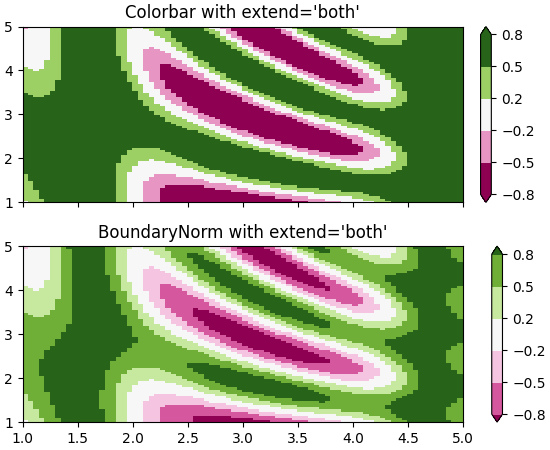

What's new in Matplotlib 3.3.0¶
For a list of all of the issues and pull requests since the last revision, see the GitHub Stats.
Table of Contents
- What's new?
- What's new in Matplotlib 3.3.0
- Figure and Axes creation / management
- Colors and colormaps
- Titles, ticks, and labels
- Other changes
- Fonts
- rcParams improvements
- 3D Axes improvements
- Interactive tool improvements
- Functions to compute a Path's size
- Backend-specific improvements
savefig()gained a backend keyword argument- The SVG backend can now render hatches with transparency
- SVG supports URLs on more artists
- Images in SVG will no longer be blurred in some viewers
- Saving SVG now supports adding metadata
- Saving PDF metadata via PGF now consistent with PDF backend
- NbAgg and WebAgg no longer use jQuery & jQuery UI
Figure and Axes creation / management¶
Provisional API for composing semantic axes layouts from text or nested lists¶
The Figure class has a provisional method to generate complex grids of named
axes.Axes based on nested list input or ASCII art:
axd = plt.figure(constrained_layout=True).subplot_mosaic(
[['.', 'histx'],
['histy', 'scat']]
)
for k, ax in axd.items():
ax.text(0.5, 0.5, k,
ha='center', va='center', fontsize=36,
color='darkgrey')
(Source code, png, pdf)
or as a string (with single-character Axes labels):
axd = plt.figure(constrained_layout=True).subplot_mosaic(
"""
TTE
L.E
""")
for k, ax in axd.items():
ax.text(0.5, 0.5, k,
ha='center', va='center', fontsize=36,
color='darkgrey')
(Source code, png, pdf)

See Complex and semantic figure composition for more details and examples.
GridSpec.subplots()¶
The GridSpec class gained a subplots method, so that one
can write
fig.add_gridspec(2, 2, height_ratios=[3, 1]).subplots()
as an alternative to
fig.subplots(2, 2, gridspec_kw={"height_ratios": [3, 1]})
New Axes.sharex, Axes.sharey methods¶
These new methods allow sharing axes immediately after creating them. Note that behavior is indeterminate if axes are not shared immediately after creation.
For example, they can be used to selectively link some axes created all
together using subplot_mosaic:
fig = plt.figure(constrained_layout=True)
axd = fig.subplot_mosaic([['.', 'histx'], ['histy', 'scat']],
gridspec_kw={'width_ratios': [1, 7],
'height_ratios': [2, 7]})
axd['histx'].sharex(axd['scat'])
axd['histy'].sharey(axd['scat'])
(Source code, png, pdf)

tight_layout now supports suptitle¶
Previous versions did not consider Figure.suptitle, so it may overlap with
other artists after calling tight_layout:
(Source code, png, pdf)
From now on, the suptitle will be considered:
(Source code, png, pdf)
Setting axes box aspect¶
It is now possible to set the aspect of an axes box directly via
set_box_aspect. The box aspect is the ratio between axes height and
axes width in physical units, independent of the data limits. This is useful
to, e.g., produce a square plot, independent of the data it contains, or to
have a non-image plot with the same axes dimensions next to an image plot with
fixed (data-)aspect.
For use cases check out the Axes box aspect example.
Colors and colormaps¶
Turbo colormap¶
Turbo is an improved rainbow colormap for visualization, created by the Google AI team for computer vision and machine learning. Its purpose is to display depth and disparity data. Please see the Google AI Blog for further details.
(Source code, png, pdf)
colors.BoundaryNorm supports extend keyword argument¶
BoundaryNorm now has an extend keyword argument, analogous to
extend in contourf. When set to 'both', 'min', or 'max', it
maps the corresponding out-of-range values to Colormap lookup-table
indices near the appropriate ends of their range so that the colors for out-of
range values are adjacent to, but distinct from, their in-range neighbors. The
colorbar inherits the extend argument from the norm, so with
extend='both', for example, the colorbar will have triangular extensions
for out-of-range values with colors that differ from adjacent in-range colors.
(Source code, png, pdf)

Text color for legend labels¶
The text color of legend labels can now be set by passing a parameter
labelcolor to legend. The labelcolor keyword can be:
- A single color (either a string or RGBA tuple), which adjusts the text color of all the labels.
- A list or tuple, allowing the text color of each label to be set individually.
linecolor, which sets the text color of each label to match the corresponding line color.markerfacecolor, which sets the text color of each label to match the corresponding marker face color.markeredgecolor, which sets the text color of each label to match the corresponding marker edge color.
(Source code, png, pdf)
Pcolor and Pcolormesh now accept shading='nearest' and 'auto'¶
Previously axes.Axes.pcolor and axes.Axes.pcolormesh handled the
situation where x and y have the same (respective) size as C by dropping
the last row and column of C, and x and y are regarded as the edges of
the remaining rows and columns in C. However, many users want x and y
centered on the rows and columns of C.
To accommodate this, shading='nearest' and shading='auto' are new
allowed strings for the shading keyword argument. 'nearest' will center
the color on x and y if x and y have the same dimensions as C
(otherwise an error will be thrown). shading='auto' will choose 'flat' or
'nearest' based on the size of X, Y, C.
If shading='flat' then X, and Y should have dimensions one larger than
C. If X and Y have the same dimensions as C, then the previous behavior
is used and the last row and column of C are dropped, and a
DeprecationWarning is emitted.
Users can also specify this by the new rcParams["pcolor.shading"] (default: 'flat') in their
.matplotlibrc or via rcParams.
See pcolormesh for examples.
Titles, ticks, and labels¶
Align labels to Axes edges¶
set_xlabel, set_ylabel and
ColorbarBase.set_label support a parameter loc for simplified
positioning. For the xlabel, the supported values are 'left', 'center', or
'right'. For the ylabel, the supported values are 'bottom', 'center', or
'top'.
The default is controlled via rcParams["xaxis.labelposition"] and
rcParams["yaxis.labelposition"]; the Colorbar label takes the rcParam based on its
orientation.

{kind=link}
{kind=link}
{kind=link}
{kind=link}
{kind=link}
{kind=link}
{kind=link}
{kind=link}
{kind=link}
{kind=link}
Allow tick formatters to be set with str or function inputs¶
set_major_formatter and set_minor_formatter
now accept str or function inputs in addition to Formatter
instances. For a str a StrMethodFormatter is automatically
generated and used. For a function a FuncFormatter is automatically
generated and used. In other words,
ax.xaxis.set_major_formatter('{x} km')
ax.xaxis.set_minor_formatter(lambda x, pos: str(x-5))
are shortcuts for:
import matplotlib.ticker as mticker
ax.xaxis.set_major_formatter(mticker.StrMethodFormatter('{x} km'))
ax.xaxis.set_minor_formatter(
mticker.FuncFormatter(lambda x, pos: str(x-5))
(Source code, png, pdf)
{kind=link}

Axes.set_title gains a y keyword argument to control auto positioning¶
set_title tries to auto-position the title to avoid any
decorators on the top x-axis. This is not always desirable so now y is an
explicit keyword argument of set_title. It defaults to None
which means to use auto-positioning. If a value is supplied (i.e. the pre-3.0
default was y=1.0) then auto-positioning is turned off. This can also be
set with the new rcParameter rcParams["axes.titley"] (default: None).
(Source code, png, pdf)
{kind=link}

Offset text is now set to the top when using axis.tick_top()¶
Solves the issue that the power indicator (e.g., 1e4) stayed on the bottom, even if the ticks were on the top.
Set zorder of contour labels¶
clabel now accepts a zorder keyword argument making it easier
to set the zorder of contour labels. If not specified, the default zorder
of clabels used to always be 3 (i.e. the default zorder of Text)
irrespective of the zorder passed to
contour/contourf. The new default zorder for
clabels has been changed to (2 + zorder passed to contour /
contourf).
Other changes¶
New Axes.axline method¶
A new axline method has been added to draw infinitely long lines
that pass through two points.
fig, ax = plt.subplots()
ax.axline((.1, .1), slope=5, color='C0', label='by slope')
ax.axline((.1, .2), (.8, .7), color='C3', label='by points')
ax.legend()
(Source code, png, pdf)
{kind=link}

imshow now coerces 3D arrays with depth 1 to 2D¶
Starting from this version arrays of size MxNx1 will be coerced into MxN
for displaying. This means commands like plt.imshow(np.random.rand(3, 3, 1))
will no longer return an error message that the image shape is invalid.
Better control of Axes.pie normalization¶
Previously, Axes.pie would normalize its input x if sum(x) > 1, but
would do nothing if the sum were less than 1. This can be confusing, so an
explicit keyword argument normalize has been added. By default, the old
behavior is preserved.
By passing normalize, one can explicitly control whether any rescaling takes
place or whether partial pies should be created. If normalization is disabled,
and sum(x) > 1, then an error is raised.
(Source code, png, pdf)
{kind=link}

Dates use a modern epoch¶
Matplotlib converts dates to days since an epoch using dates.date2num (via
matplotlib.units). Previously, an epoch of 0000-12-31T00:00:00 was used
so that 0001-01-01 was converted to 1.0. An epoch so distant in the past
meant that a modern date was not able to preserve microseconds because 2000
years times the 2^(-52) resolution of a 64-bit float gives 14 microseconds.
Here we change the default epoch to the more reasonable UNIX default of
1970-01-01T00:00:00 which for a modern date has 0.35 microsecond
resolution. (Finer resolution is not possible because we rely on
datetime.datetime for the date locators). Access to the epoch is provided by
get_epoch, and there is a new rcParams["date.epoch"] (default: '1970-01-01T00:00:00') rcParam. The user may
also call set_epoch, but it must be set before any date conversion
or plotting is used.
If you have data stored as ordinal floats in the old epoch, you can convert them to the new ordinal using the following formula:
new_ordinal = old_ordinal + mdates.date2num(np.datetime64('0000-12-31'))
Lines now accept MarkerStyle instances as input¶
Similar to scatter, plot and Line2D now accept
MarkerStyle instances as input for the marker parameter:
plt.plot(..., marker=matplotlib.markers.MarkerStyle("D"))
Fonts¶
Simple syntax to select fonts by absolute path¶
Fonts can now be selected by passing an absolute pathlib.Path to the font
keyword argument of Text.
Improved font weight detection¶
Matplotlib is now better able to determine the weight of fonts from their metadata, allowing to differentiate between fonts within the same family more accurately.
rcParams improvements¶
matplotlib.rc_context can be used as a decorator¶
matplotlib.rc_context can now be used as a decorator (technically, it is now
implemented as a contextlib.contextmanager), e.g.,
@rc_context({"lines.linewidth": 2})
def some_function(...):
...
rcParams for controlling default "raise window" behavior¶
The new config option rcParams["figure.raise_window"] (default: True) allows disabling of the raising
of the plot window when calling show or pause. The
MacOSX backend is currently not supported.
Add generalized mathtext.fallback to rcParams¶
New rcParams["mathtext.fallback"] (default: 'cm') rcParam. Takes "cm", "stix", "stixsans"
or "none" to turn fallback off. The rcParam mathtext.fallback_to_cm is
deprecated, but if used, will override new fallback.
Add contour.linewidth to rcParams¶
The new config option rcParams["contour.linewidth"] (default: None) allows to control the default
line width of contours as a float. When set to None, the line widths fall
back to rcParams["lines.linewidth"] (default: 1.5). The config value is overridden as usual by the
linewidths argument passed to contour when it is not set to
None.
3D Axes improvements¶
Axes3D no longer distorts the 3D plot to match the 2D aspect ratio¶
Plots made with Axes3D were previously
stretched to fit a square bounding box. As this stretching was done after the
projection from 3D to 2D, it resulted in distorted images if non-square
bounding boxes were used. As of 3.3, this no longer occurs.
Currently, modes of setting the aspect (via
set_aspect) in data space are not
supported for Axes3D but may be in the future. If you want to simulate having
equal aspect in data space, set the ratio of your data limits to match the
value of get_box_aspect. To control these ratios use the
set_box_aspect method which accepts the
ratios as a 3-tuple of X:Y:Z. The default aspect ratio is 4:4:3.
3D axes now support minor ticks¶
ax = plt.figure().add_subplot(projection='3d')
ax.scatter([0, 1, 2], [1, 3, 5], [30, 50, 70])
ax.set_xticks([0.25, 0.75, 1.25, 1.75], minor=True)
ax.set_xticklabels(['a', 'b', 'c', 'd'], minor=True)
ax.set_yticks([1.5, 2.5, 3.5, 4.5], minor=True)
ax.set_yticklabels(['A', 'B', 'C', 'D'], minor=True)
ax.set_zticks([35, 45, 55, 65], minor=True)
ax.set_zticklabels([r'$\alpha$', r'$\beta$', r'$\delta$', r'$\gamma$'],
minor=True)
ax.tick_params(which='major', color='C0', labelcolor='C0', width=5)
ax.tick_params(which='minor', color='C1', labelcolor='C1', width=3)
(Source code, png, pdf)
{kind=link}
Interactive tool improvements¶
More consistent toolbar behavior across backends¶
Toolbar features are now more consistent across backends. The history buttons will auto-disable when there is no further action in a direction. The pan and zoom buttons will be marked active when they are in use.
In NbAgg and WebAgg, the toolbar buttons are now grouped similarly to other backends. The WebAgg toolbar now uses the same icons as other backends.
Toolbar icons are now styled for dark themes¶
On dark themes, toolbar icons will now be inverted. When using the GTK3Agg backend, toolbar icons are now symbolic, and both foreground and background colors will follow the theme. Tooltips should also behave correctly.
Cursor text now uses a number of significant digits matching pointing precision¶
Previously, the x/y position displayed by the cursor text would usually include far more significant digits than the mouse pointing precision (typically one pixel). This is now fixed for linear scales.
GTK / Qt zoom rectangle now black and white¶
This makes it visible even over a dark background.
Event handler simplifications¶
The backend_bases.key_press_handler and
backend_bases.button_press_handler event handlers can now be directly
connected to a canvas with canvas.mpl_connect("key_press_event",
key_press_handler) and canvas.mpl_connect("button_press_event",
button_press_handler), rather than having to write wrapper functions that
fill in the (now optional) canvas and toolbar parameters.
Functions to compute a Path's size¶
Various functions were added to BezierSegment and Path to
allow computation of the shape/size of a Path and its composite Bezier
curves.
In addition to the fixes below, BezierSegment has gained more
documentation and usability improvements, including properties that contain its
dimension, degree, control_points, and more.
Better interface for Path segment iteration¶
iter_bezier iterates through the BezierSegment's that
make up the Path. This is much more useful typically than the existing
iter_segments function, which returns the absolute minimum amount
of information possible to reconstruct the Path.
Fixed bug that computed a Path's Bbox incorrectly¶
Historically, get_extents has always simply returned the Bbox of
a curve's control points, instead of the Bbox of the curve itself. While this is
a correct upper bound for the path's extents, it can differ dramatically from
the Path's actual extents for non-linear Bezier curves.
Backend-specific improvements¶
savefig() gained a backend keyword argument¶
The backend keyword argument to savefig can now be used to pick the
rendering backend without having to globally set the backend; e.g., one can
save PDFs using the pgf backend with savefig("file.pdf", backend="pgf").
The SVG backend can now render hatches with transparency¶
The SVG backend now respects the hatch stroke alpha. Useful applications are, among others, semi-transparent hatches as a subtle way to differentiate columns in bar plots.
SVG supports URLs on more artists¶
URLs on more artists (i.e., from Artist.set_url) will now be saved in
SVG files, namely, Ticks and Line2Ds are now supported.
Images in SVG will no longer be blurred in some viewers¶
A style is now supplied to images without interpolation (imshow(...,
interpolation='none') so that SVG image viewers will no longer perform
interpolation when rendering themselves.
Saving SVG now supports adding metadata¶
When saving SVG files, metadata can now be passed which will be saved in the
file using Dublin Core and RDF. A list of valid metadata can be found in
the documentation for FigureCanvasSVG.print_svg.
Saving PDF metadata via PGF now consistent with PDF backend¶
When saving PDF files using the PGF backend, passed metadata will be
interpreted in the same way as with the PDF backend. Previously, this metadata
was only accepted by the PGF backend when saving a multi-page PDF with
backend_pgf.PdfPages, but is now allowed when saving a single figure, as
well.
NbAgg and WebAgg no longer use jQuery & jQuery UI¶
Instead, they are implemented using vanilla JavaScript. Please report any issues with browsers.